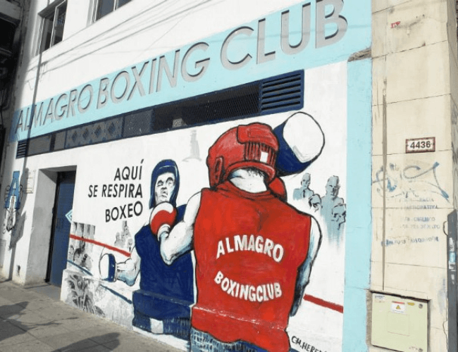

Almagro Boxing Club: una verdadera cuna de campeones
Almagro Boxing Club fue el primer gimnasio de boxeo en Argentina. De él salieron grandes campeones, tanto olímpicos como mundiales.
Por: Tomás Aronna San Martín
“Una hora más en el club, una hora menos en la calle”. Ese es el lema del mítico Almagro Boxing Club, lugar de donde salieron grandes pugilistas desde su fundación, el 30 de abril de 1923.
En una entrevista, con el presidente del club, Vicente García Holgado, detalla la historia de la institución, el trabajo del boxeador, si les afectó el cambio ecónomico que vino de la mano del gobierno de Mauricio Macri, tal como le ocurrió a muchos otros clubes.
En el gimnasio, ubicado en Avenida Díaz Vélez 4422, se puede apreciar el mismo cartel que fue utilizado en la fundación del club que supo albergar y forjar a boxeadores de primer nivel, como Luis Ángel Firpo, además de medallistas de oro olímpicos: Pascual Pérez (que también fue campeón mundial profesional), Carmelo Robledo y Oscar Casanovas; Hubo otro campeón mundial, Pedro Décima, y un campeón sudamericano. El Almagro Boxing cuenta con 500 socios activos. En la actualidad, los profesores están más enfocados en el boxeo amateur que en el profesional, se dedican a formar chicos pero según palabras del presidente “a medida que se van desarrollando, por más que uno no quiera, van entrando al profesionalismo”.
Su objetivo como institución no es solamente enseñarles a boxear. Los dirigentes cuentan que tienen muchos jóvenes de bajos recursos y el club les da una mano para salir de la calle, sin importar las condiciones deportivas en primera instancia, sino la formación humana.
El gimnasio no se vio perjudicado por los tarifazos, como ocurrió con otros clubes de barrio, ya que todavía reciben los subsidios otorgados durante el gobierno anterior.
El club Almagro recoge la tradición de un deporte que ingresó al país siendo una actividad propia de la aristocracia, gracias a la influencia británica a fines del siglo XIX, pero que con el devenir de los años empezó a ser un refugio para las familias obreras o de pocos recursos. A diferencia de sus inicios, el boxeo se convirtió en una actividad popular; sin embargo, no todos llegan a ser profesionales, hay quienes pelean en forma amateur; en ese carácter, esta disciplina cuentan con protecciones adicionales para cuidar más al deportista, aparte de tener rounds más cortos.
“El toro salvaje de las pampas”
Una de las grandes glorias que salió de este club, Luis Ángel Firpo, luchó en la llamada “Pelea del siglo” contra el estadounidense Jack Dempsey, el 14 de septiembre de 1923, en el estadio Polo Grounds de Nueva York. Firpo tiró a Dempsey en el primer round, pero el norteamericano consiguió levantarse y continuó la pelea que al final ganaría. Terminando el primer asalto, Firpo sacó del cuadrilátero a Dempsey, con un derechazo al mentón. La pelea estuvo envuelta en polémica ya que el estadounidense permaneció entre 14 y 17 segundos fuera del ring, aunque la cuenta del árbitro llegó solamente hasta 9. Tras esto, incluyendo que los periodistas ayudaron a su rival a volver al ring, mucha gente reclamó que Firpo debería haber ganado la pelea por nocaut. En el segundo round, Dempsey tiró a Firpo por tercera vez y el árbitro frenó la pelea declarando al norteamericano campeón por dejar al argentino fuera de combate.